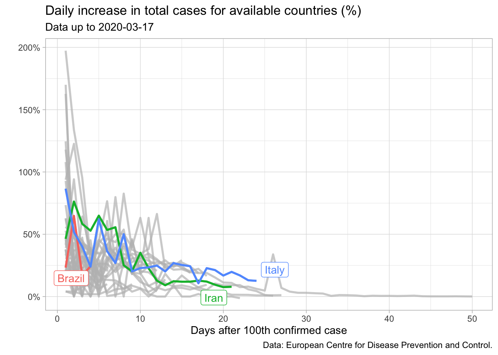
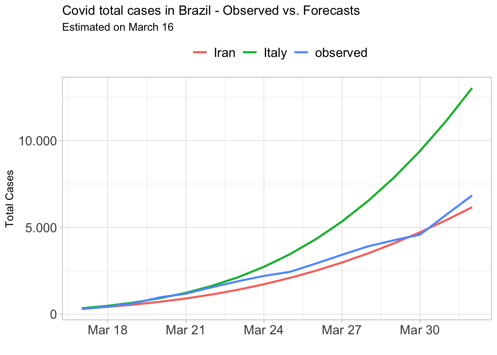
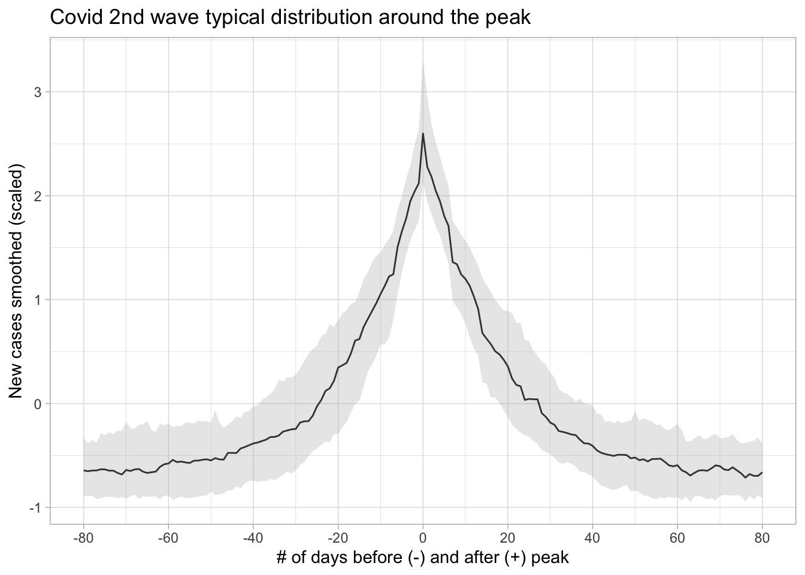

Forecasting is correctly understood as a task of extrapolating historical patterns of a given process in order to infer a plausible range where future values should lie. Sometimes, however, we don’t have a historical pattern to rely on. Think of the onset of COVID-19 outbreak in 2020, for example. This event was completely new and, except for some ideas borrowed from the epidemiology literature, we didn’t know much about how the virus would spread nor did we have enough data to perform a minimally robust analysis.
In this section, we’ll discuss a widely used technique to predict variables for which we have no direct data: comparison. The basic idea is that we should look for a similar event somewhere else, either currently going on or in the past, and then assume that our variable of interest will follow closely that pattern. The most important (and difficult) thing here is to choose reasonable units for comparison. Ultimately, this is what guarantees the validity of the exercise. We’ll walk through two examples which show that a mix of creativity and statistical concepts can deliver decent answers to complicated questions.
7.1 The early days of COVID-19 in Brazil
It was the beginning of March, 2020 and we were seeing new cases of COVID spreading rapidly in different countries in Asia and Europe. In Brazil, it would start a few weeks later. At that time I was working at Itau Asset Management, a well-known hedge fund in Brazil. Portfolio managers and analysts needed an accurate yet timely sense of how the situation would evolve domestically in order to make reasoned decisions and keep track of the potential impact on both economic and financial variables. However, Brazil was then stepping into the early days of the epidemic curve so that no more than a handful of observations were available to estimate any model. How could I deliver a reliable answer?
I started looking for patterns stemming from other countries which were already a couple of weeks ahead in this process. This search brought about some interesting clues. In particular, I noticed that for several countries the daily increase in cumulative cases was very noisy up to the hundredth confirmed case, but then it seemed to decrease slowly – though not steadily – as a function of time. We can check it in the plot below.
library(gghighlight)library(ggrepel)countries_out <-c("Qatar", "Pakistan", "Dominican_Republic")covid_data_aux %>% dplyr::filter(!Country.Region %in% countries_out, t <=50, date <='2020-03-17' ) %>%ggplot(aes(x = t, y = r, color = Country.Region)) +geom_line(lwd =1) +gghighlight(Country.Region %in%c("Brazil", "Italy", "Iran")) +theme_light() +scale_y_continuous(labels =function(x) paste0(x, "%")) +theme(legend.position ="none") +labs(title ="Daily increase in total cases for available countries (%)",subtitle ='Data up to 2020-03-17',x ="Days after 100th confirmed case",y ="", color ="",caption ="Data: European Centre for Disease Prevention and Control." )

I could explore this fact to obtain future values for Brazil. Of course that reasoning assumed that the daily increase in total cases for Brazil would on average resemble the path of a given country or a pool of countries (if I used a panel regression) – not a very strong assumption, especially if we consider the lack of data.
In this regard, I decided to rule out countries which did not appear to be reasonable benchmarks such as China and South Korea since they had imposed tight restrictions very quickly – and I didn’t expect Brazil to do the same. Two countries were seemingly good candidates back then, Iran and Italy. Both of them shared the time pattern described above. Furthermore, expectations were that tougher restrictions would be implemented only progressively – something I suspected would be done in Brazil too.
So how did I make use of the information from these countries to produce forecasts for Brazil? Firstly, I estimated the curve above using a simple OLS regression with data as of the hundredth case – the period where the time trend was noticeable. I chose to model each country separately since I could assess each path later and eventually discard the one performing worse.
Let \(r_t\) be the daily increase in total cases in period \(t\) and \(i = [\text{Italy, Iran}]\). Then,
\[ log(r_{it}) = \beta_0 + \beta_1t_i \hspace{0.5cm} (1)\] The OLS estimate for this equation is shown below.
## Data for regressiondata_reg <- covid_data_aux %>% dplyr::filter( Country.Region %in%c("Italy", "Iran") ) %>% plyr::dlply(.variables ="Country.Region")## Model equationmod_eq <-'log(r) ~ t'%>%as.formula()## Fit the modelfit_reg <-map(.x = data_reg, .f =~lm(mod_eq, data = .x))
Show the code
library(jtools)## Plot model resultsexport_summs( fit_reg$Italy, fit_reg$Iran,model.names =rev(names(fit_reg)))
Italy
Iran
(Intercept)
4.05 ***
3.79 ***
(0.07)
(0.11)
t
-0.06 ***
-0.06 ***
(0.00)
(0.00)
N
55
52
R2
0.95
0.86
*** p < 0.001; ** p < 0.01; * p < 0.05.
Next, consider \(C_t\) the number of total cases in period \(t\). Thus the total cases in Brazil for \(t+1\) is given by:
Hence the path computed in \(t\) for \(t+k\), \(k = 1,2,3,4, ... ,T\) is given by:
\[ C_{t+k} = C_t \times \prod_{t}^{k}\left(1+\frac{\hat{r_{it}}}{100}\right) \ (3)\] Note that we can use the fitted values from Equation 1 to obtain \(\hat{r_{it}}\) as long as \(t+k\) is available in the sample of the country \(i\). For a longer period not yet reached by the country \(i\), we could easily make forecasts of \(\hat{r_{it}}\) since the only co-variate is \(t\) – the time in days after the hundredth confirmed case.
Let us suppose we are on March 16 (the third day after Brazil exceeded 100 cases) and we wish to compute the path for the next three days. Thus we need \(\hat{r}_{it}\) for \(t =\) 4, 5 and 6 as well as \(C_3 = 235\), the number of total cases recorded in March 16. We dubbed Iran-like and Italy-like the forecasts for Brazil based on the fitted values using data from these countries.
For example, to produce the Italy-like path on March 16 we should first take the (exponentiated) fitted values from the Italy model.
Then, we multiply the initial value (the number of cases on March 16) by the cumulative \(\hat{r}_{it}\) starting on \(t = 4\). Note that we could produce forecasts for the next 55 days since Italy was at the 55th day after the 100th case. Also, we could produce a new forecast path everyday updating the actual value for \(C\). This would certainly make our forecasts more accurate, since we would not carry forward wrong values predicted for \(t = 2, 3,..., T\). But to keep the exercise simple, let’s suppose a single path completely built from \(C_3 = 235\).
We can get rid of manual calculations by creating a function that takes these arguments – \(C\), \(t\) and the regression model – and deliver the estimated number of total cases for \(t+k\).
It’s much easier to look at the results graphically.
Show the code
data_plot <- covid_data_aux %>%filter(Country.Region =='Brazil') %>%select(date, t, observed = acum_cases) %>%left_join(covid_br_fc) %>%select(-t)data_plot %>%filter(date <='2020-04-01'& date >='2020-03-17') %>%pivot_longer(cols =-c('date'), names_to ='var', values_to ='value') %>%ggplot(aes(x = date)) +geom_line(aes(y = value, color = var), lwd =1) +theme_light() +scale_x_date(date_breaks ='3 days', date_labels ='%b %d') +scale_y_continuous(labels =function(x) format(x, big.mark ='.')) +theme(legend.position ='top', axis.text =element_text(size =13),legend.text =element_text(size =13) ) +labs(title ='Covid total cases in Brazil - Observed vs. Forecasts',subtitle ='Estimated on March 16',x ='', y ='Total Cases', color ='')

The actual values for Brazil were very close to those recorded by the two countries in the short-term and lied between the two curves in the mid-term – although I have not updated the forecasts here, something I did at the time. This result shows how simple exercises can play a significant role in real cases. In fact, we successfully relied on this strategy for a couple of months. At the time, both models produced good one up to seven-step-ahead forecasts since the beginning. For longer horizons, the Iran-like model delivered fairly stable accuracy, while the Italy-like model surprisingly improved over time.
7.2 The second wave in Brazil
Questions shift very rapidly in the financial markets. After some time, we were experiencing the second wave of Covid in Brazil and a set of containing restrictions were in place. As we approached important dates for local retail businesses, the big question was whether those restrictions would be lifted in time not to cause major demage to the economy.
Note that it’s no more a matter of simply predicting new cases for the next days. This time we needed an estimate for the second wave peak and how fast the subsequent decline would be – these parameters served as triggers for policy decisions. Once again, Brazil was a latecomer in this process as several countries had already gone through the second wave. So with the appropriate ideas we could benefit from this condition.
In general, how long does it take to reach the peak after the second wave has started? How long does it take to go down to the bottom after reaching the peak? The first challenge here is that the second wave occurred in a non-synchronized way between countries. The number of days around the peak wasn’t the same either. However, looking at the plot below we can see a large number of peaks occurring in the period between November 2020 and March 2021. At the time, I assumed it as the typical period where the second wave took place. Note that some countries had started a third wave, but I couldn’t rely on these information since this new cycle was not complete yet.
Show the code
covid_data <-read_csv('data/owid-covid-data.csv')covid_data %>%filter(date <='2021-05-01') %>%ggplot(aes(x = date)) +geom_line(aes(y = new_cases_smoothed, color = location)) +theme_light() +theme(legend.position ='none') +scale_y_continuous(labels =function(x) format(x, big.mark ='.')) +scale_x_date(date_breaks ='2 months', date_labels ='%b/%y') +annotate("rect",xmin =as.Date('2020-11-01'),xmax =as.Date('2021-03-01'),ymin =-Inf, ymax =Inf,alpha = .2) +labs(title ='Covid New Cases (smoothed) by country',subtitle ='Shaded Area = assumed 2nd wave',x ='', y ='Covid New Cases (smoothed)')
The idea I came up with was to zoom-in on this period and then compute the typical behavior of new cases around the peak. First, I filtered the November 2020 - March 2021 period excluding Brazil from the data set. Next, I created a variable peak_date as the earliest date where each country recorded the maximum number of new cases in the period. I also created the variable t_around_peak to count the number of days before and after the peak date. Finally, I computed the median, first and third quartiles from the distribution of new cases for every t_around_peak. But notice that I had standardized (scaled) the data in order to prevent countries with higher (lower) numbers from over(under)weight the statistics.
covid_2nd_wave %>%filter(between(t_around_peak, -80, 80)) %>%ggplot(aes(x = t_around_peak)) +geom_line(aes(y = median)) +geom_ribbon(aes(ymin = lower, ymax = upper), alpha =0.3, fill ='grey70') +theme_light() +scale_x_continuous(breaks =seq(-80, 80, 20)) +labs(title ='Covid 2nd wave typical distribution around the peak',x ='# of days before (-) and after (+) peak',y ='New cases smoothed (scaled)' )

On average, the number of new cases grew rapidly for 20 days until it peaked and then took about the same amount of days to reach the bottom. In addition, there was greater uncertainty about the behavior of the pre-peak period as showed in the shaded area. Once again, the exercise proved to be very helpful as the realized values were in line with expectations.